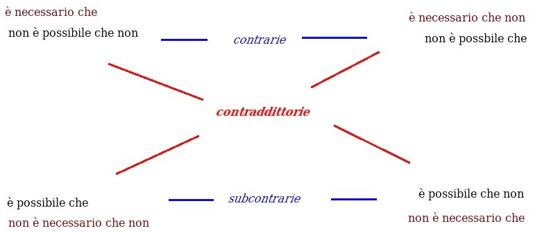

Agli amici degli
Incontri Interdisciplinari
Carissimi,
Ci rivedremo mercoledì 17 novembre, alle ore 21, presso il Convento San Domenico, che ci ospiterà nella sua “sala rossa”, cui si accede da Via San Domenico 1.
La volta scorsa, dopo aver valutato diverse proposte, abbiamo deciso che quest'anno il tema che guiderà i nostri incontri sarà:
libertà umana e determinismi scientifici: problemi di compatibilità.
L'argomento dovrebbe prestarsi ad un dibattito che coinvolge diverse competenze, dando occasione a tutti di dare un proprio contributo. Si pensi ai problemi di certezza e verità, del libero arbitrio, del determinismo, del compatibilismo...
Per iniziare, mi è stato chiesto di animare il prossimo incontro sul tema del determinismo.
Ancora una volta cerchiamo di ricordare il nostro metodo di lavoro: noi ci riuniamo per ascoltarci e vedere di riuscire ad entrare nel punto di vista dell'altro, punto di vista che comunque sarà per noi un motivo di arricchimento, non per convincere gli altri.
Un cordiale arrivederci a presto
Fra Sergio Parenti O.P.
_______________________________________________________________________________________
Breve resoconto dell'interdisciplinare del 17 novembre 2010
a cura di fra Sergio Parenti O.P.
PARENTI - Seguo lo schema che vi ho mandato. Il determinismo può essere inteso in molti modi. Uno può essere determinista pur dicendo che le cose sono tutte contingenti, per via della volontà di Dio che sarebbe l'unica causa efficiente (vi è analogia tra le posizioni dell'Islam e quelle della filosofia moderna). Uno può dire che l'agire dell'uomo è determinato mentre tutto il resto non lo è: l'agire dell'uomo sarebbe determinato dagli stimoli che riceve. Altri dicono che il mondo è totalmente determinato e però ammettono il libero arbitrio.
[VOCE]Le premesse del determinismo, che troviamo nello stoicismo, sono due: che ogni evento ha una causa (o insieme di cause) e che posta una causa segue l'effetto. Si parla soprattutto di determinismo per rapporto alle cause efficienti o, per l'agire volontario, della causa finale (l'attrazione).
Laplace ci diede la sua celebre descrizione del determinismo, e uno stoico paragonò l'uomo ad un cagnolino attaccato ad un grosso carro: che guaisca e si ribelli o che lo segua tranquillo, comunque verrà trascinato.
Tutto parte dalla definizione di possibilità: impossibile è ciò che non può essere o accadere; necessario ciò che non può non essere o accadere; contingente è ciò che c'è o accade, ma potrebbe non esserci o non accadere; possibile è ciò che non c'è o non accade, ma può esserci o accadere. Quest'ultima definizione è scorretta, perché contiene ciò che deve definire. Se prendiamo però come primitivo il possibile, possiamo costruire il noto quadrato logico:

Le contraddittorie sono le enunciazioni diametralmente opposte: non possono essere entrambe vere e nemmeno entrambe false (se una è vera, l'altra è falsa).
Le contrarie non possono essere entrambe vere, ma possono essere entrambe false.
Le subcontrarie possono essere entrambe vere, ma non entrambe false.
Chiameremo non determinata la situazione per cui una stessa cosa ha entrambe le possibilità (entrambe le subcontrarie sono vere). Il determinismo nega appunto la non determinazione.
Ciò che è necessario è anche possibile. Non vale l'inverso. Ma non abbiamo bisogno di partire dalla necessità per inferire la possibilità. Basta partire dall'esserci o non esserci di qualcosa o di qualche evento per poter inferirne la possibilità, o dal non esserci per inferirne la non necessarietà. Ab esse ad posse valet illatio... (ma non è detto l'inverso).
Da un punto di vista logico si è definita la possibilità partendo dalla non contraddittorietà. Questo modo ha avuto grande importanza in almeno due argomenti: quello degli enti matematici (fino ai nostri giorni) e quello dell'onnipotenza divina (in generale nello scontro di ebraismo, cristianesimo e islamismo con l'emanazionismo; più in particolare nella disputa sulla predestinazione, con gli infiniti mondi possibili che sono nella mente divina, di cui si servivano i molinisti e che tramite Leibniz arrivano ai nostri giorni, come in Kripke o nella teoria dei multiversi).
Da un punto di vista reale la possibilità significa una reale capacità di fare o diventare qualcosa. Il contingente è allora ciò che può essere e non essere: un vestito può venir usato oppure ridotto a stracci da buttare, ma se viene ridotto a stracci non viene usato, dunque un vestito può essere usato o non usato. Il quadrato logico diventa così un triangolo, dove il contingente prende il posto del possibile (il quadrato logico resta valido, appunto perché parla del possibile). Questo ci porta anche a distinguere due tipi di possibilità. Quella che parte dall'esserci necessario va distinta da quella che è ambivalente, come la possibilità del vestito.
Mentre la possibilità logica si fonda su un confronto di concetti, quella reale si fonda sulle interazioni delle cose di un mondo dove tutto interagisce trasformando. Le scienze studiano queste interazioni e, sulla base delle capacità di interagire, sia in senso passivo sia in senso attivo (che sono sempre insieme, perché la generazione di una cosa è la corruzione di un'altra), distinguono le cose di questo mondo. Per quanto siano insoddisfacenti le nostre definizioni, l'alternativa pare essere la descrizione dell'aspetto che, pur essendo spesso utile, a volte trae in inganno.
La possibilità reale fonda la nostra capacità predittiva. Chi sta cercando di fare qualcosa ed è capace di farla, prima o poi ci riuscirà. Se non ci riesce, diciamo che allora non è capace. Ciò che è generabile è pure corruttibile e viceversa, altrimenti si avrebbe che chi di fatto è capace da solo di esistere sempre, sarebbe corruttibile; mentre chi non è capace di esistere sempre da solo, sarebbe incorruttibile, cioè sarebbe sarebbe capace di esistere sempre anche da solo.
La possibilità reale sembra permettere di fondare quello che chiamiamo postulato empirico del caso:
"Se un evento ha una probabilità costante p in ogni prova e se esso si verifica m volte in n prove, il rapporto o frequenza m/n dà un valore approssimato della probabilità p, e l'approssimazione è ordinariamente tanto migliore quanto maggiore è il numero n delle prove".
Dalla frequenza di un evento possiamo cioè risalire alla sua probabilità (probabilità che vien detta "a posteriori").
Il postulato empirico, dunque, è detto impropriamente "postulato", se dalla possibilità reale posso spiegarlo.
Nella visione meccanicista e determinista dell'universo, ovviamente, il caso poteva esserci solo come nostra incapacità di conoscere. Forse per questo Einstein diceva che Dio non gioca ai dadi.
Ma con la fisica quantistica la possibilità è stata riconosciuta far parte della struttura delle cose stesse, e sembra più corretto dire, con Ennio De Giorgi (inedito pubblicato su Avvenire del 7 novembre 2010), che Dio non ignora la teoria matematica dei giochi.
Anche la contrapposizione di finalismo e caso (es.: il Dawkins) ha senso solo se si accetta una precomprensione di tipo meccanicista e determinista (però con notevoli difficoltà a definire il "caso" stesso). Viceversa, dal punto di vista delle capacità di agire, è "casuale" ciò che si accompagna accidentalmente con ciò che si sta facendo, ma non c'entra con esso: il caso viene cioè definito per rapporto al termine (fine) cui tende un'azione, analogamente a come vien definito l'invano, la frustrazione. Ovviamente il fine non andrà inteso solo come progetto legato ad una qualche conoscenza.
Dal punto di vista logico abbiamo per ora esaminato solo le modalità di possibile, necessario ecc. nel rapporto tra un predicato ed un soggetto. Il discorso però va ampliato al rapporto tra proposizioni. I rapporti tra due proposizioni, tenendo conto della negazione, sono 16 e tutti interscambiabili tra loro (ad esempio "non (p e q)" equivale a "non p vel non q", ecc.). Preferirei usare "se p allora q", il condizionale materiale (ne trattò Filone d'Alessandria, se non erro), che è vero sempre eccetto quando l'antecedente è vero e falso il conseguente. Il condizionale materiale però non sembra corrispondere all'uso comune che facciamo dell'implicazione, soprattutto quando la usiamo per esprimere una causalità. Dire che "se il mare è salato allora il Sole sorge ad est" è una implicazione materiale vera, ma non rende un'idea di causalità. L'implicazione stretta afferma invece che è necessario che p implichi q. Per me, però, nemmeno l'implicazione stretta rende l'idea della causalità, perché essa vale, ad esempio, anche per effetti collegati in parallelo ad una stessa causa (se la lampadina A si accende, allora necessariamente si accende anche la lampadina B). Probabilmente, a livello di logica proposizionale, un linguaggio formale, che cioè prescinde dal significato dei simboli, costruito a priori, non è capace di esprimere la causalità. Questo non toglie che si possa costruire un linguaggio formale a posteriori, cioè fatto apposta per descrivere la causalità, anche se in teoria resta valido per descrivere anche eventuali altre cose.
Dal punto di vista reale, quello cioè che parte dall'interagire delle cose, possiamo notare infine che i predicati modali, anche usati in logica, si dicono solo relativamente ad una causa di un qualche tipo che diventa, dal punto di vista logico, la spiegazione dell'effetto e della sua modalità. Abbiamo allora che un'azione non ostacolabile produce inevitabilmente l'effetto, mentre se è frustrabile abbiamo la possibilità che l'effetto non segua, qualora vi sia la coincidenza con un ostacolo sufficiente.
Se la coincidenza non ha una propria causa, parleremo di "meramente casuale", o accidentale, a proposito della coincidenza. Essa è prevedibile solo quando si può già conoscere il coincidere delle due azioni (il vaso che cade dalla finestra ed il signore che sta uscendo dalla porta sottostante).
Parleremo invece di "non necessario", ma non di meramente casuale o accidentale, per tutto ciò che un'azione sta producendo, pur essendo accidentalmente frustrabile. Esso è prevedibile, conoscendo l'azione; però per avere la certezza è necessario poter escludere le possibili interferenze accidentali, il che è quello che cerchiamo di fare quando portiamo l'auto dal meccanico prima di partire, o quando ci si prepara ad una missione più impegnativa, come un viaggio spaziale.
Ovviamente, in una coincidenza, ogni agente produce il proprio effetto. Può capitare che gli effetti siano incompatibili tra loro (frustrazione, spiegazione del male). L'interazione delle cause crea una situazione per cui si attua quello che non c'entra per rapporto all'azione della causa frustrata.
Come nasce l'aleatorio? L'indeterminazione di una causa riguarda spesso solo certi aspetti dell'effetto, sempre per rapporto alla causa. Una moneta non può non cadere su una delle facce, ma non è detto quale. Questo dipenderà da fattori accidentali (se non è stata truccata). Il calcolo a priori della probabilità parte così dall'enumerazione delle possibilità ugualmente possibili. Ma suppone sempre qualcosa di necessario a monte.
BELARDINELLI - Se B avviene dopo A, ma succede sempre, occorre dire che non è accidentale.
PARENTI - Conosco solo una eccezione: in ogni trasformazione si parte da un contrario che è privo di ciò che si raggiunge: una privazione è necessariamente presente, ma non c'entra, perché non spiega (e sparisce al termine della trasformazione). Forse si tratta di una necessità logica: in fondo potremmo conoscere tutto ciò che c'è solo con giudizi affermativi. Aristotele si rifà alla frequenza anche lui, e però è lui a dire che la privazione è accidentale pur essendo necessariamente sempre presente.
BELARDINELLI - Poi c'è la certezza fisica: non si ha fino in fondo.
CORNA - Se uno conoscesse tutte le variabili, nessuna esclusa...
BELARDINELLI - Il problema viene quando il sistema è intrinsecamente complesso, così da non essere prevedibile.
PARENTI - Il presente è determinato. Se Socrate è seduto, non è in piedi. Il problema del determinismo non si pone in questo caso. Ma anche una conoscenza di tutto ciò che sta accadendo (tutte le automobili che arrivano ad un incrocio, tutti i vasi che stanno cadendo...) equivarrebbe ad una conoscenza del presente, essendoci la coincidenza in atto delle azioni. Anche il passato resta necessario.
SARTI - Il passato è passato. Per aver una certezza che qualcosa accade, si dovrebbe aver conosciuto lo stato del sistema per un tempo adeguatamente lungo.
BELARDINELLI - Questo però non è un puro determinismo, per il quale basterebbe conoscere lo stato in un istante.
SARTI - Se hai un sistema di cui conosci la dinamica, tu puoi prevedere il suo comportamento in base ad un numero adeguato di osservazioni precedenti non infinito. Ma quello che è discutibile è la possibilità di conoscere la dinamica del sistema. Questo punto di vista è deterministico, e ciò che è imprevisto viene da mancata conoscenza. Però succede che una ragionevole e non perfetta conoscenza del sistema dia una previsione, che psicologicamente scambiamo per certezza. La probabilità dell'evento, piccola oltre un certo limite, diventa una certezza psicologica.
STIRPE - Sono d'accordo con Corna. Domani pioverà? Se ci sono tutte le condizioni, sì. Per tutti i fenomeni fisici, senza l'intervento dell'uomo, per me vale questo. Per l'uomo abbiamo un dilemma. Se l'uomo è fatto solo di molecole si comporterà come l'acqua, necessariamente, a seconda delle condizioni fisico-chimiche in cui si trovano le sue molecole. Il libero arbitrio sarebbe una illusione.
SARTI - La previsione della pioggia è impossibile se non per pochi giorni, perché non abbiamo strumenti per conoscere con abbastanza precisione lo stato del sistema atmosfera.
BELARDINELLI - Con un sistema semplice si sa che cosa succederà.
CORNA - Lo si sa statisticamente. Oggi si misura la qualità di un prodotto con sistema statistico. Parrebbe impossibile arrivare al cento per cento nella previsione di un fenomeno, o nella valutazione della qualità di un prodotto. Esiste l'impossibile?
PARENTI - Ci sono cose impossibili. Una vecchia guida alpina mostrava il vetro della finestra ad una signora, dicendole che su per di lì nessuno poteva arrampicarsi.
BERTUZZI - C'è una certezza assoluta che è come il principio di non contraddizione, un a-priori, che non ha bisogno di confronto con la realtà. Nella realtà abbiamo certezze solo ipotetiche: nella misura che è valida l'ipotesi da cui si parte. La certezza della legge naturale ammette delle smentite, non è incontrovertibile.
CORNA - E' una carenza di conoscenza?
BERTUZZI - Nella natura esistono delle eccezioni. La certezza fisica è ipotetica. Nella previsione del comportamento dell'uomo, poi, c'è in più la libertà, che non è assoluta, ma può contrastare la tendenza fisica (come quando vado in montagna e provo le vertigini, ma mi sforzo di vincerle). Abbiamo così tre tipi di certezza: ma non sono allo stesso livello. Le certezze matematiche sono a priori.
CORNA - Il determinismo scientifico è questione di conoscenza o no? Con la crescita della scienza restano gradi di indeterminazione?
BERTUZZI - Dipende: se è la realtà che è deterministica...
PARENTI - Il problema della conoscenza lo avrò sempre. Ma è solo un problema di conoscenza? Nel concetto di sistema è compreso o è escluso che qualcosa non c'entri? Un granello di sabbia che entra nell'orologio c'entra o non centra? La prevedibilità delle cose che non c'entrano, dove non c'è una causa della coincidenza, ci può essere solo quando si possono osservare le cause che già coincidono. Notate che ci può essere una causa della coincidenza. Ad esempio un padrone può mandare due servi a fare due percorsi in modo tale che si incontrino. L'incontro, per rapporto all'intenzione del padrone, non è casuale. Per rapporto all'intenzione dei due servitori invece è casuale. Per questo avevo detto che il "per caso" è relativo. Davanti alla divina Provvidenza non c'è nulla di casuale.
SARTI - Il moscerino fa parte del sistema che devi conoscere.
PARENTI - Un oggetto lo possiamo portare in molti posti. Un computer militare viene testato per temperature da deserto. Il discorso è sempre relativo. Rispetto a certe cause ci può essere necessità assoluta. Ad esempio per la causa materiale: se il materiale è fragile, il manufatto è fragile. La causa formale, in matematica, è analoga. Il problema è nella causa efficiente ed anche nella causa finale.
PIFFERI - Il determinismo non ammette il caso. Se ci fosse una mente che conosce le posizioni di tutte le molecole e di tutti gli atomi, e tutti i parametri, per tale mente il caso è escluso.
PARENTI - Ma se nella causalità efficiente ci fosse qualcosa di simile ad un dado, che necessariamente deve cadere su una faccia, ma non è determinato quale?
Le variabili che lo fanno cadere su una faccia anziché sull'altra non sono come la variabile immessa da chi trucca il dado.
Ci può essere nella natura l'indeterminazione? L'asino di Buridano non starà a morire di fame: ad un certo punto tirerà una moneta e su questa base sceglierà. Ma ciò che è accidentale resterà tale.
L'uomo, libero, non agisce in quanto indeterminato, ma in quanto si autodetermina. L'interessante è vedere i modi diversi in cui ci autodeterminiamo. Quando parliamo di determinismo però non parliamo di questo: i compatibilisti ammettono il libero arbitrio, come facevano gli stoici, ammettendo la possibilità logica. La fisica quantistica è deterministica?
BELARDINELLI - E' deterministica circa i principi, anche se poi riconosce il caso.
PARENTI - Se il caso è relativo, e io nel sistema voglio mettere tutto, anche quello che non c'entra, voglio diventare come Dio, di fronte al quale non c'è né caso né necessità: se io vi vedo seduti non diventa necessario che siate seduti.
MANZI - Faccio fatica a seguire: cerco di distinguere gli ambiti in cui si parla di necessità: è molto diverso l'approccio degli autori di riferimento, quello metafisico, quello della scienza... Se dal punto di vista fisico il moscerino che entra nell'orologio fa parte del sistema... allora dobbiamo distinguere gli ambiti.
PARENTI - Se io esplicito l'aspetto relativo, cioè rispetto a quale causa parlo di caso o di necessità, ci si chiarisce.
MANZI - L'approccio della fisica, quello della filosofia della natura, quello della metafisica, restano diversi e pongono i problemi in modo diverso. Non possiamo affrontare in modo indiscriminato la questione.
DE RISO - Non c'è staticità, ma continuità tra i punti di vista, che si evolvono nel confronto.
MANZI - Esiste una scienza empirica che ha un suo statuto epistemologico, diverso dallo statuto della metafisica. Poi nella filosofia della natura, diceva Maritain, si cerca di fare una mediazione. Prima va chiarito questo quadro. Questa comunque è una mia difficoltà.
PARENTI - Vi ho detto che sono termini relativi, mentre voi, mi sembra, li usate in modo assoluto. Poi ho distinto la possibilità logica da quella reale. Non è contraddittorio che io salti due metri, però mi è impossibile. Io non contrappongo la fisica alla filosofia della natura.
MANZI - Non dico contrapporre... Sto parlando di precisare, che è un'altra cosa.
PARENTI - Io distinguo le proprietà che le cose hanno in quanto sono conosciute da quelle che hanno in quanto sono reali, e tra quelle reali distinguo quelle che hanno in quanto esistono e quelle che hanno in quanto sono trasformabili. Per esempio: quello che entra nell'orologio è un corpo, non c'entra che sia un moscerino o un granello di sabbia.
SARTI - Come è fatto il sistema che determina un certo evento? Lo puoi sapere solo a posteriori, dopo che l'evento si è verificato. Qual è la struttura, le dimensioni, l'estensione del sistema? Con certezza riesci a saperlo solo dopo. Piuttosto ciò che mette in crisi il determinismo sono le biforcazioni. Vi sono fenomeni in cui una variazione infinitesima, cioè più piccola di qualunque valore pensabile, può determinare in un tempo finito variazioni macroscopiche nello stato del sistema. Questo è il problema delle previsioni metereologiche. Un ricercatore aveva fermato il calcolatore per riprendere il giorno dopo. E lo riprese da un punto intermedio. Ebbe risultati completamente diversi, per via della approssimazione: non aveva introdotto tutte le cifre che il calcolatore aveva. Questo risvegliò l'interesse di certi studi di fine ottocento su equazioni dove una variazione infinitesima nello stato iniziale produceva risultati diversi. Questo in un quadro deterministico. Ma dal punto di vista dei risultati è una indeterminazione.
CORNA - Nel campionamento, a seconda di come si prende il campione, uno ha risultati diversi. Il problema è sempre di conoscenza.
PARENTI - Che cos'è che è irrilevante nella considerazione di un sistema?
BELARDINELLI - Dipende dagli obiettivi che uno ha. Se uno vuole studiare il sistema di cui parlava Sarti, dovrebbe conoscere esattamente le condizioni iniziali per avere sempre la stessa traiettoria. Ma, se lo segui solo per un quarto d'ora, hai risultati diversi.
PARENTI - Ma esistono le cose accidentali? Provo a definirle a posteriori: quelle cose che lo statistico trascura perché non c'entrano. Quelle per cui si faceva la barzelletta in cui la pulce ammaestrata, quando le si taglia anche l'ultima zampa, diventa sorda. O quella dell'ubriacone che, avendo mal di testa con whisky e soda, con brandy e soda, con grappa e soda... decide di eliminare la soda.
Quello che è rilevante o irrilevante entrerà in questi discorsi o no?
Può esserci una capacità di suo ambivalente, per cui non verrà determinata da nessuno, se non per cose meramente accidentali? Se in natura ci fosse qualche cosa del genere...
BERTUZZI - Nei metodi di induzione, soprattutto con Stuart Mill, si cerca di poter fare previsioni che sono valide empiricamente, ma non sono leggi. Le leggi sono valide a priori. Lo scienziato deve saper dedurre, dalle caratteristiche del whisky e della soda, se fa male o meno, indipendentemente dalle prove empiriche. Si arriva a delle leggi quando si può arrivare a conclusioni valide indipendentemente dalla casualità e dagli imprevisti, senza ricavarle dall'esperienza. Il metodo induttivo non porta a leggi universali e necessarie, a differenza del metodo deduttivo matematico. La scienza moderna ha unito i due metodi. Ma le deduzioni si fanno prima dell'esperimento.
MANZI - Da qui nasce il problema se il determinismo sia questione di conoscenza o no. Che cosa crea la deduzione? La matematica o una induzione che viene rivista e ripensata come un universale, che è ipotesi ma anche capacità di creare l'esperienza stessa?
PIFFERI - Oppure una intuizione.
SARTI - Ogni tanto i medici venivano a cercarmi portandomi una gran massa di dati, chiedendomi di trovare cause o correlazioni. Io trovavo delle bellissime correlazioni, che però non c'entravano per nulla.
PARENTI - Tutti muoiono a letto...
SARTI - Prendendo le statine, dopo un poco provai un dolorino alla spalla. Il medico mi disse di sospendere le statine, ed il dolore passò. Mi fece allora prendere uno yogurt per abbassare il colesterolo. E mi tornò il dolorino. Allora chiesi al medico quale fosse il meccanismo di azione delle statine, e mi rispose che non si sa.
Quando noi ci facciamo un'immagine di un sistema, lo costruiamo noi, a priori, salvo verifica. Esiste nella misura in cui noi lo sappiamo costruire. Questo è un problema di conoscenza. Ma noi, parlando in termini di sistema, abbiamo fatto un passo: abbiamo valicato una frontiera, che è il metodo con cui noi abbiamo stabilito la nostra conoscenza.